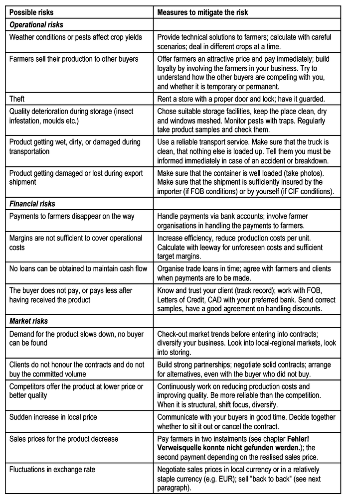
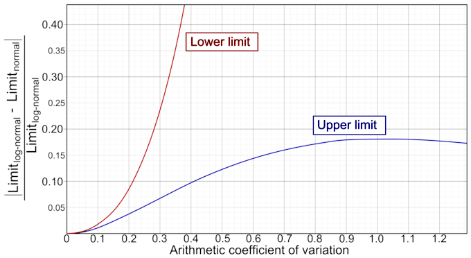
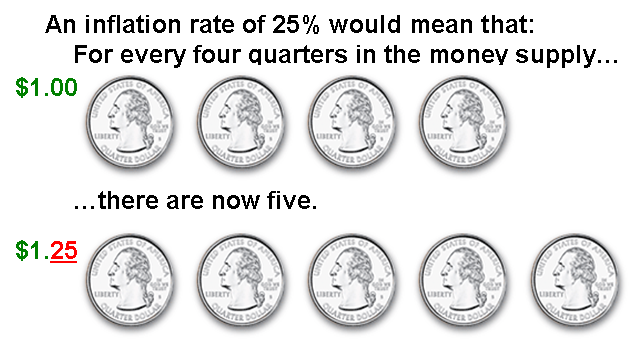
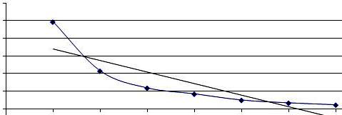
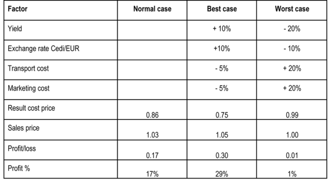
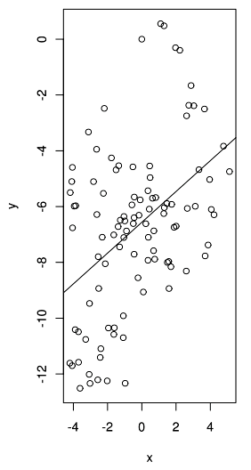
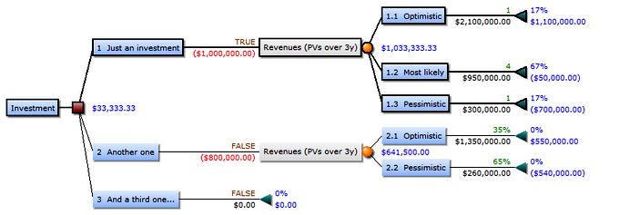
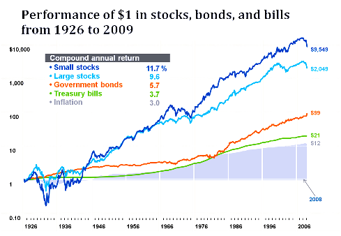
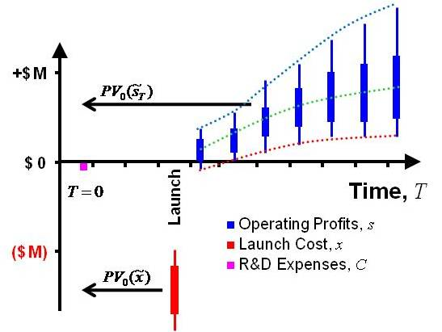

Table of Contents
12. The Role of Risk in Capital Budgeting
12.1. The Relationship Between Risk and Capital Budgeting
12.1.1. Risks Involved in Capital Budgeting
12.1.2. Risk Aversion
12.1.3. Approaches to Assessing Risk
12.2. Assessing Stand-Alone Risk
12.2.1. Overview of How to Assess Stand-Alone Risk
12.3. Risk and Return
12.3.1. Risk and Return Considerations
12.4. Scenario and Simulation Assessments
12.4.1. Sensitivity Analysis
12.4.2. Scenario Analysis
12.4.3. Monte Carlo Simulation
12.4.4. Decision Trees
12.5. Factors Impacting Capital Budgeting
12.5.1. Risk Adjusting the Discount Rate
12.5.2. Risk Adjusting for the Time Horizon
12.6. Other Considerations in Capital Budgeting
12.6.1. Other Considerations in Capital Budgeting
12. The Role of Risk in Capital Budgeting
12.1. The Relationship Between Risk and Capital Budgeting
12.1.1. Risks Involved in Capital Budgeting
The process of capital budgeting must take into account the different risks faced by corporations and their managers.
Learning Objective
Identify the different risks that must be accounted for in the capital budgeting process
Key Points
- Capital budgeting (or investment appraisal) is the planning process used to determine whether an organization's long-term investments are worth pursuing. The risk that can arise here involves the potential that a chosen action or activity (including the choice of inaction) will lead to a loss.
- There are numerous kinds of risks to be taken into account when considering capital budgeting. Each of these risks addresses an area in which some sort of volatility could forcibly alter the plan of firm managers.
- There are different ways to measure and prepare to deal and plan for these risks, including sensitivity analysis, scenario analysis, and break-even analysis among others.
Key Terms
- capital budgeting
- The planning process used to determine whether an organization's long term investments, such as new machinery, replacement machinery, new plants, new products, and research development projects are worth pursuing.
- risk
- The potential that a chosen action or activity (including the choice of inaction) will lead to a loss (an undesirable outcome).
Capital Budgeting
Capital budgeting (or investment appraisal) is the planning process used to determine whether an organization's long term investments, such as new machinery, replacement machinery, new plants, new products, and research development projects are worth pursuing. When taking on this planning process, managers must take into account the potential risks of the investment not panning out the way they plan for it to, for any number of reasons. In order to discuss this further, we should look into defining the concept or risk.
Risk
Risk is the potential that a chosen action or activity (including the choice of inaction) will lead to a loss (an undesirable outcome). The notion implies that a choice having an influence on the outcome exists (or existed). Potential losses themselves may also be called "risks. "
{kind=link}
This chart represents a list of the possible risks involved in running an organic business. Risks such as these affect sales, which in turn affect the amount of operating leverage a company should utilize.
There are numerous kinds of risks to be taken into account when considering capital budgeting including:
- corporate risk
- international risk (including currency risk)
- industry-specific risk
- market risk
- stand-alone risk
- project-specific risk
Each of these risks addresses an area in which some sort of volatility could forcibly alter the plan of firm managers. For example, market risk involves the risk of losses in position due to movement in market positions.
There are different ways to measure and prepare to deal with risks as well. One such way is to conduct a sensitivity analysis. Sensitivity analysis is the study of how the uncertainty in the output of a model (numerical or otherwise) can be apportioned to different sources of uncertainty in the model input.
A related practice is uncertainty analysis which focuses rather on quantifying uncertainty in model output. Ideally, uncertainty and sensitivity analysis should be run in tandem. Another method is scenario analysis, which involves the process of analyzing possible future events by considering alternative possible outcomes.
For example, a financial institution might attempt to forecast several possible scenarios for the economy (e.g., rapid growth, moderate growth, slow growth), and it might also attempt to forecast financial market returns (for bonds, stocks, and cash) in each of those scenarios. It might consider sub-sets of each of the possibilities. It might further seek to determine correlations and assign probabilities to the scenarios. Then it will be in a position to consider how to distribute assets between asset types (i.e., asset allocation). The institution can also calculate the scenario-weighted expected return (which figure will indicate the overall attractiveness of the financial environment). It may also perform stress testing, using adverse scenarios.
12.1.2. Risk Aversion
Risk aversion describes how people react to conditions of uncertainty and has implications for investment decisions.
Learning Objective
Evaluate a person's risk aversion
Key Points
- Risk aversion is the reluctance of a person to accept a bargain with an uncertain payoff rather than another bargain with a more certain, but possibly lower, expected payoff.
- People can be risk averse, risk neutral, or risk loving. A risk averse person will generally take a guaranteed outcome even if it has a lower expected payout than a gamble, while a risk lover will take on the gamble unless the guaranteed payoff is greater than the expected payoff of the gamble.
- Firm management can adopt different stances based on how risk averse they feel they should be, given different market qualities and firm conditions. They will make capital investments that they feel will have the best payoffs, given the risks involved.
Key Term
- Risk Aversion
- Risk Aversion is a concept that addresses how people will react to a situation with uncertain outcomes. It attempts to measure the tolerance for risk and uncertainty. Risk aversion is the reluctance of a person to accept a bargain with an uncertain payoff rather than another bargain with a more certain, but possibly lower, expected payoff.
In the realm of finance and economics, Risk Aversion is a concept that addresses how people will react to a situation with uncertain outcomes. Risk aversion can be applied to many different situations including investments, lotteries, and any other situations with uncertain outcomes.
It attempts to measure the tolerance for risk and uncertainty. Risk aversion is the reluctance of a person to accept a bargain with an uncertain payoff rather than another bargain with a more certain, but possibly lower, expected payoff. For example, a risk-averse investor might choose to put his or her money into a bank account with a low but guaranteed interest rate instead of investing in a stock that may have high expected returns, but also involves a chance of losing value. Risk aversion can be applied to many different situations, including investments, lotteries, and other situations with uncertain outcomes. Because organizations are composed of individuals, risk aversion at the individual level plays a role in organizational decision making.
People fall under different categories of risk aversion. If we look at an example where a person could receive 50 dollars without risk, or take a gamble where they receive 100 dollars or 0 dollars depending on the outcome of a coin flip, we can explain the differences. We see when we use the expected payoffs of each scenario we see that each has an expected payoff of 50 dollars. Situation one has a 100% chance of getting 50 dollars so it's expected payoff is (1)(50)=50. For the second situation, the expected payoff deals with a 50-50 chance of getting 100 or 0 dollars so, (.5)(100)+(.5)(0)=50. This is important to know for this example. A risk-averse, or risk avoiding person would take the guaranteed payment of 50, or even less than that (40 or 30) depending on how risk averse they are. A risk neutral person would be indifferent between taking the gamble or the guaranteed money. Finally a risk loving person would take the non-guaranteed chance of possibly winning 100 dollars, rather than settling for the guaranteed option. If the guaranteed option was greater than 50 dollars, then the risk lover might consider the possibility of taking it.
This can be extended to capital budgeting. A firm's management can adopt different stances based on how risk averse they feel they should be, given different market qualities and firm conditions. They will make capital investments that they feel will have the best payoffs, given the risks involved, and if they take a more risk averse stance they will make capital investment decisions that have a more guaranteed payoff. On the other hand, if they be more risk loving, they will be attracted to the more risky investments for capital that they believe have a chance for higher payoff.
12.1.3. Approaches to Assessing Risk
Some of the quantitative definitions of risk are grounded in statistical theory and lead naturally to statistical estimates, but some are more subjective.
Learning Objective
Define different types of risk
Key Points
- As risk carries so many different meanings, there are many formal methods used to assess or to "measure" risk. Planned actions are subject to large cost and benefit risks, so proper risk assessment and management is crucial to making them successful.
- The assessment of risk is an integral part of risk management in general, and includes probability studies, impact of events, taking into account the affect of every known risk on the project, and the actions needed to resolve these issues, should they occur.
- Behavioral finance focuses on risk-aversion, and other ways that financial behavior varies from what analysts call rational. Here, risk is uncertainty associated with return on assets. In enterprise risk management, risk is an event that can have negative influences on the enterprise in question.
Key Terms
- risk
- The potential that a chosen action or activity (including the choice of inaction) will lead to a loss (an undesirable outcome).
- Behavioral Finance
- Field that focuses on human risk-aversion, asymmetric regret, and other ways that human financial behavior varies from what analysts call "rational".
There are numerous important and applicable approaches to assessing risk in capital budgeting.
Since planned actions are subject to large cost and benefit risks, proper risk assessment and risk management for such actions are crucial to making them successful. As risk carries so many different meanings, there are many formal methods used to assess or to "measure" risk. Some of the quantitative definitions of risk are well-grounded in statistics theory and lead naturally to statistical estimates, but some are more subjective. For example, in many cases a critical factor is human decision making. One can say that in the realm of capital budgeting and corporate finance, both types of risk assessment are crucial.
The field of behavioral finance focuses on human risk-aversion, asymmetric regret, and other ways that human financial behavior varies from what analysts call "rational". Risk, in that case, is the degree of uncertainty associated with a return on an asset. In enterprise risk management, a risk is defined as a possible event or circumstance that can have negative influences on the enterprise in question. Its impact can be on the very existence, the resources (human and capital), the products and services, or the customers of the enterprise, as well as external impacts on society, markets, or the environment. In a financial institution, enterprise risk management is normally thought of as the combination of credit risk, interest rate risk or asset liability management, market risk, and operational risk.
In project management, risk management can include: planning how risk will be managed, assigning a risk officer, maintaining a database of live risks, and preparing risk mitigation plans. The assessment of risk is an integral part of risk management in general, and includes probability studies, impact of events, and takes into account the affect of every known risk on the project, and the actions needed to resolve these issues, should they occur.
In the more general case, every probable risk can have a pre-formulated plan to deal with its possible consequences. From the average cost per employee over time, or cost accrual ratio, a project manager can estimate: the cost associated with the risk, if it arises, estimated by multiplying employee costs per unit time by the estimated time lost (cost impact, C where C = cost accrual ratio * S), the probable increase in time associated with a risk (schedule variance due to risk, Rs where Rs = Probability * S). Sorting on this value puts the highest risks to the schedule first. This is intended to cause the greatest risks to the project to be attempted first so that risk is minimized as quickly as possible.This can be slightly misleading as schedule variances with a large P (probability) and small S (estimated time lost) and vice versa are not equivalent. (The risk of the RMS Titanic sinking vs. the passengers' meals being served at slightly the wrong time).
The probable increase in cost associated with a risk (cost variance due to risk, Rc where Rc = P*C = P*Cost Accrual Ratio*S = P*S*CAR): sorting on this value puts the highest risks to the budget first, which can raise concerns about schedule variance.
12.2. Assessing Stand-Alone Risk
12.2.1. Overview of How to Assess Stand-Alone Risk
Total Beta is a measure used to determine risk of a stand-alone asset, as opposed to one that is a part of a well-diversified portfolio.
Learning Objective
Describe different ways to assess stand-alone risks
Key Points
- Appraisers frequently value assets or investments, such as closely held corporations, as stand-alone assets.
- In terms of finance, the coefficient of variation allows investors to determine how much volatility (risk) they are assuming in relation to the amount of expected return from an investment.
- A lower coefficient of variation indicates a higher expected return with less risk.
Key Terms
- probability distribution
- A function of a discrete random variable yielding the probability that the variable will have a given value
- correlation coefficient
- Any of the several measures indicating the strength and direction of a linear relationship between two random variables.
Stand-Alone Risk
Recall that Beta is a number describing the correlated volatility of an asset or investment in relation to the volatility of the market as a whole. However, appraisers frequently value assets or investments, such as closely held corporations, as stand-alone assets. Total Beta is a measure used to determine the risk of a stand-alone asset, as opposed to one that is a part of a well-diversified portfolio. It is able to accomplish this because the correlation coefficient, R, has been removed from Beta. Total Beta can be found using the following formula:
Total Beta = $\frac { \beta }{ R }$
Another statistical measure that can be used to assess stand-alone risk is the coefficient of variation. In probability theory and statistics, the coefficient of variation is a normalized measure of dispersion of a probability distribution. It is also known as unitized risk or the variation coefficient. In terms of finance, the coefficient of variation allows investors to determine how much volatility (risk) they are assuming in relation to the amount of expected return from an investment. Volatility is measured in the form of the investment's standard deviation from the mean return, thus the coefficient of variation is this standard deviation divided by expected return. A lower coefficient of variation indicates a higher expected return with less risk.
{kind=link}
The coefficient of variation, an example of which is plotted in this graph, can be used to measure the ratio of volatility to expected return.
The coefficient of variation is a dimensionless number, meaning it is independent of the unit in which the measurement has been taken. For this reason, it becomes useful to us in finance to measure the risk of an investment in a way that it is not dependent upon other types of risk, such as that of the overall market.
12.3. Risk and Return
12.3.1. Risk and Return Considerations
The higher the risk undertaken, the more ample the expected return - and conversely, the lower the risk, the more modest the expected return.
Learning Objective
Evaluate a party's risk aversion when proposing investment opportunities
Key Points
- The general progression in the risk-return spectrum is: short-term debt, long-term debt, property, high-yield debt, and equity.
- When a firm makes a capital budgeting decision, they will wish, as a bare minimum, to recover enough to pay the increased cost of goods due to inflation.
- Risk aversion is a concept based on the behavior of firms and investors while exposed to uncertainty to attempt to reduce that uncertainty.
- Beta is a measure firms can use in order to determine an investment's return sensitivity in relation to overall market risk.
Key Terms
- political risk
- the potential loss for a company due to nonmarket factors as macroeconomic and social policies
- inflation
- An increase in the general level of prices or in the cost of living.
- systematic risk
- The risk associated with an asset that is correlated with the risk of asset markets generally, often measured as its beta.
Risk and Return Considerations
Risk refers to the variability of possible returns associated with a given investment. Risk, along with the return, is a major consideration in capital budgeting decisions. The firm must compare the expected return from a given investment with the risk associated with it. Higher levels of return are required to compensate for increased levels of risk. In other words, the higher the risk undertaken, the more ample the return - and conversely, the lower the risk, the more modest the return.
This risk and return tradeoff is also known as the risk-return spectrum. There are various classes of possible investments, each with their own positions on the overall risk-return spectrum. The general progression is: short-term debt, long-term debt, property, high-yield debt, and equity. The existence of risk causes the need to incur a number of expenses. For example, the more risky the investment the more time and effort is usually required to obtain information about it and monitor its progress. Moreover, the importance of a loss of X amount of value can be greater than the importance of a gain of X amount of value, so a riskier investment will attract a higher risk premium even if the forecast return is the same as upon a less risky investment. Risk is therefore something that must be compensated for, and the more risk the more compensation is required.
When a firm makes a capital budgeting decision, they will wish, as a bare minimum, to recover enough to pay the increased cost of investment due to inflation. Thus, inflation is a pivotal input in a firm's cost of capital. However, since interest rates are set by the market, it happens frequently that they are insufficient to compensate for inflation.
{kind=link}
Inflation is a rise in the general level of prices of goods and services in an economy over a period of time.
Risk aversion also plays an important role in determining a firm's required return on an investment. Risk aversion is a concept based on the behavior of firms and investors while exposed to uncertainty to attempt to reduce that uncertainty. Risk aversion is the reluctance to accept a bargain with an uncertain payoff rather than another bargain with a more certain, but possibly lower, expected payoff. For example, a risk-averse investor might choose to put his or her money into a bank account with a low but guaranteed interest rate, rather than into a stock that may have high expected returns, but also involves a chance of losing value. Risk aversion can be thought of as having three levels:
- Risk-averse or risk-avoiding
- Risk-neutral
- Risk-loving or risk-seeking
Beta is a measure firms can use in order to determine an investment's return sensitivity in relation to overall market risk. Beta describes the correlated volatility of an asset in relation to the volatility of the benchmark that said asset is being compared to. This benchmark is generally the overall financial market and is often estimated via the use of representative indices, such as the S&P 500. Beta is also referred to as financial elasticity or correlated relative volatility, and can be referred to as a measure of the sensitivity of the asset's returns to market returns, its non-diversifiable risk, its systematic risk, or market risk. Higher-beta investments tend to be more volatile and therefore riskier, but provide the potential for higher returns. Lower-beta investments pose less risk, but generally offer lower returns.
12.4. Scenario and Simulation Assessments
12.4.1. Sensitivity Analysis
Sensitivity analysis determines how much a change in an input will affect the output.
Learning Objective
Describe how sensitivity analysis is used to make investment decisions
Key Points
- Since variations from the base assumptions are expected, businessmen and women want to know how much their output (eg., revenue) will be affected by the variations.
- Sensitivity analysis helps find the optimal levels for inputs (eg., raw material prices, number of employees, sales price) .
- Sensitivity analysis is a statistical tool based on seeing how inputs and parameters affect outputs. Generally, each input is changed one at a time to see how it affects output. However, this does not account for interconnectedness between inputs; they may not be independent variables.
Key Terms
- sensitivity analysis
- the study of how the uncertainty in the output of a mathematical model or system can be apportioned to different sources of uncertainty in its inputs
- parameter
- A variable kept constant during an experiment, calculation, or similar.
Capital budgeting is, by definition, forward looking. When dealing with expected resources and demands, uncertainty is a major factor. Sensitivity analysis is a statistical tool that determines how consequential deviations from the expected value occur. Sensitivity Analysis deals with finding out the amount by which we can change the input data for the output of our linear programming model to remain comparatively unchanged. This helps us in determining the sensitivity of the data we supply for the problem. It also helps to determine the optimal levels of each input.
Sensitivity analysis can be useful for a number of reasons, including:
- Support decision making or the development of recommendations for decision makers (e.g., testing the robustness of a result).
- Enhance communication from modelers to decision makers (e.g., by making recommendations more credible, understandable, compelling or persuasive).
- Increase understanding or quantification of the system (e.g., understanding relationships between input and output variables).
- Model development (e.g., searching for errors in the model).
In order to conduct a sensitivity analysis, all of the inputs and parameters are connected via an algorithm to produce the output. For example, a model of the inputs and parameters for a company interest in creating a new product may include information about expected availability of raw material, inflation rates, and number of employees working in R&D. The output would be the profit generated by the new product. The sensitivity analysis entails changing each variable and seeing how that changes the output . Generally, only one variable is changed at once, with all of the others fixed at their base value. This makes it easy to see how much a variable affects the output. However, not all of the inputs may be independent so changing inputs one at a time does not account for interaction between the inputs.
{kind=link}
Sensitivity analysis determines how much an output is expected to change due to changes in a variable or parameter. In this case, the output (y-axis) decreases exponentially with an increase in the input (x-axis). This is mapped out for each input.
12.4.2. Scenario Analysis
Scenario analysis is a process of analyzing decisions by considering alternative possible outcomes.
Learning Objective
Explain scenario analysis is used by investors
Key Points
- Scenario analysis is designed to see the consequences of an action under different sets of factors. For example, it shows how an investment's NPV would differ under high and low inflation.
- Scenarios should be feasible enough to provide an accurate picture of the outcomes. A "good" scenario for an investor should not include winning the lottery because, though good, it is neither probable nor realistic for analyzing possible results.
- Many scenario analyses use 3 scenarios: base case, worst case and best case. However, the number and conditions of the scenarios in each analysis can vary.
Key Terms
- scenario analysis
- a process of analyzing possible future events by considering alternative possible outcomes
- analysis
- A process of dismantling or separating into constituent elements in order to study the nature, function, or meaning.
- scenario
- A set of factors that can affect the consequences of an action. The environment.
Scenario Analysis
Scenario analysis is a strategic process of analyzing decisions by considering alternative possible outcomes (sometimes called "alternative worlds"). It is not a predictive mechanism, but rather an analytic tool to manage uncertainty today. .
{kind=link}
This scenario analysis shows how changes in factors like yield and transport cost can affect profits.
For example, a firm might use scenario analysis to determine the net present value (NPV) of a potential investment under high and low inflation scenarios.
In another example, a bank might attempt to forecast several possible scenarios for the economy (e.g. rapid vs. moderate vs. slow growth) or it might try to forecast financial market returns (for bonds, stocks and cash) in each of those scenarios. Perhaps, it might also consider sub-sets of each of the possibilities. It might further seek to determine correlations and assign probabilities to the scenarios (and sub-sets if any). By analyzing these various scenarios, the bank will be in a better position to consider how best to allocate its assets.
Many scenario analyses use three different scenarios: base case, worst case and best case. The base case is the expected scenario: if all things proceed normally, this is what the expected outcome will be. The worst and best cases are obviously scenarios with less and more favorable conditions, but they are still confined by a sense of feasibility. For example, an investor creating the worst case scenario would not be well served to have it include a meteor strike that destroys the company. While clearly a bad scenario, it is not realistic enough to be helpful.
The purpose of scenario analysis is not to identify the exact conditions of each scenario; it just needs to approximate them to provide a plausible idea of what might happen.
12.4.3. Monte Carlo Simulation
Monte Carlo simulation uses statistical data to figure out the average outcome of a scenario based on multiple, complex factors.
Learning Objective
Describe how Monte Carlo simulations are used
Key Points
- The statistical distribution is estimated for each input (eg. inflation rate, market risk). Then, simulations are run to see how constantly changing inputs (based on their distribution) affect the output. The outputs are averaged to find the estimated output.
- Monte Carlo simulations are great for when there are multiple inputs that can all change and may be unrelated.
- Monte Carlo simulations can be applied in many areas of business, such as bond pricing, but are especially useful when estimating the "base case" is difficult to do by hand.
Key Term
- distribution
- A probability distribution; the set of relative likelihoods that a variable will have a value in a given interval.
In order to account of complex, interconnected factors, all of which may affect financial outcomes, companies turn to statistical methods. The Monte Carlo method solves a problem by directly simulating the underlying process and then calculating the average result of the process. It simulates the various sources of uncertainty (eg. inflation, default risk, market changes, etc.) that affect the value of the instrument, portfolio, or investment in question, and calculates a representative value given these possible values of the underlying inputs. In essence, the Monte Carlo method is designed to find out what happens to the outcome on average when there are changes in the inputs.
Each potential factor is assigned a probability or statistical distribution. For example, the investor may estimate the probability of default on a bond as 20%. That means that 20% of the time, he will not earn back his principal. The investor may also estimate that the inflation rate is normally distributed around a mean of 3% and standard deviation of 0.5%.
The investor estimates the probability or distribution of every factor that could change the result of the investment. Then, he essentially uses the distributions to run many many simulations of all the inputs to see how they affect the output and then finds the average output .
{kind=link}
By running many simulations based on the probability or distribution of an input (x), the analyst can see the average output (y). This is done for multiple inputs at once to find out how they affect the output.
For example, for bonds and bond options, under each possible evolution of interest rates the investor observes a different yield curve and a different resultant bond price. To determine the bond value, these bond prices are then averaged. To value the bond option, as for equity options, the corresponding exercise values are averaged and present valued. By determining the average, the investor can figure out what the expected value is.
The advantage of the Monte Carlo method is that it is able to handle multiple moving, and possible related, inputs. As the number of factors increases, it becomes harder to figure out the "base case. " Statistical analysis through Monte Carlo simulations is great at handling problems with multiple, inter-related, and uncertain factors.
12.4.4. Decision Trees
A decision tree is a decision support tool that uses a tree-like graph or model of decisions and their possible consequences.
Learning Objective
Describe how to set up a decision tree
Key Points
- Decision trees look similar to flow charts, except they are designed to pick the most optimal strategy.
- There are three types of nodes on a decision tree: decision nodes, chance nodes, and end nodes.
- Decision trees are solved from top to bottom in order to determine the most optimal strategy. Sometimes, there may not be an obvious optimal strategy, but the tree is still useful for mapping out the options faced and their costs/benefits.
Key Term
- node
- A vertex point on a decision tree. Other branches may extend from it; if none do, it is an end node.
A decision tree is a decision support tool that uses a tree-like graph or model of decisions and their possible consequences, including chance event outcomes, resource costs, and utility. They help to identify the strategy that is most likely to reach the declared goal. For an investor, this may be used to help determine which bond to buy in order to get the highest expected return with only a certain amount of risk. Decision trees are set up much like an organizational flow chart.
{kind=link}
This decision tree highlights the outcomes of different investing strategies. Next to the terminal nodes is blue text with the yield and gain.
Unlike a flow chart, a decision tree consists of three types of nodes:
- Decision nodes - commonly represented by squares – the user gets to decide which branch to take.
- Chance nodes - represented by circles – the branch taken is determined by probabilities.
- End nodes - represented by triangles – there are no more branches extending from the node, and the final value of the strategy is listed.
In order to set up and use a decision tree, the user must first list each decision point. For example, in , the investor first listed the number of investments that could be made (1, 2, or 3) and then the options for the likely payoffs (optimistic, most likely, etc.). Each end node was given a value. Working from left to right (or top to bottom), the investor determined that making one investment has the highest expected value (\$641,500 vs. \$0). Therefore, the investor will definitely choose to make one investment. Then, to determine the payoff, the probabilities and yields are listed. This is a chance node, so the investor doesn't know how much he will earn from the investment, but does know his options.
Decision trees can become very complex, so determining the correct strategy becomes more difficult. Decision trees are always solved from the top to the bottom (or left to right) and is just a process of picking the most optimal path or seeing the likely payoffs.
There may not be an idea strategy shown on the decision tree. In that case, the decision tree is still useful as a way to map out all of the possible strategies with their costs and benefits.
12.5. Factors Impacting Capital Budgeting
12.5.1. Risk Adjusting the Discount Rate
Discount rates are adjusted on an investment to investment basis, as different investments encounter different degrees of risk that must be considered when determining equitable returns.
Learning Objective
Realize the reasoning behind adjusting discount rates for risk, and the way this impacts the cost of capital
Key Points
- In central banking, the established discount rate will act as the benchmark for future interest rates issued. This cost will be adjusted on an investment to investment basis depending upon the degree of risk.
- Discount rates are utilized in net present value calculations (NPV) in order to determine the rate of risk and return a new venture or new project should provide.
- Calculating NPV is an extremely useful tool. An NPV analysis will take future expectations of cost and revenue and ground them in present day dollars (to take into account the time value of money). This shows if/when a project will be profitable.
- When adjusting the NPV calculation for additional risks, and thus risk-adjusting the discount rate, a variety of factors can be taken into consideration. A rNPV (risk-adjusting NPV) will assign a probability to each incoming cash flow to adjust expectations of risk in the calculation.
Key Term
- discounted cash flow
- An estimated future cash flow discounted by the probability of receiving that cash flow.
What is the Discount Rate?
The discount rate has a few definitions, depending on the context. For the sake of this discussion, the discount rate is the percentage used in an net present value calculation to understand the overall cost of capital (or, from the perspective of some investors, the required return) on a given project. What this means is that there is a rate, calculated by the assumption of risk, which is used to normalize the interest rate on borrowed capital (for the borrower) and/or invested capital (for the lender.
In U.S. central banking, the interest rate that banks pay the federal reserve when using securities as collateral is also referred to as the discount rate, and in this case it will act as the benchmark for future interest rates issued.
Why Adjust for Risk?
The primary purpose of a discount rate, or an interest rate in general, is fairly simple. Capital today is worth more than capital tomorrow, due to the time value of money (i.e. the opportunity cost of foregone investments). As a result of this concept, the idea of interest rates is justified. All this means is that a borrower of capital will have to take into account the cost of that capital over a given time period, which will be calculated as an additional percentage of the overall principal borrowed being added to the principal itself on a period to period basis.
In this context, the interest rate is subjected to risk. A riskier investment will require a higher return (due to the basic premise of risk and return). After all, why invest in a riskier investment when safer investments exist unless that riskier investment offers a higher percentage of return? It is at this point that the logic behind adjusting discount rates becomes practical. All discount rates must take into account the overall risk being assumed in the investment, and adjust the rate of expected return to meet the implications of the overall risk over time. For banks, for example, the overall interest rate they would offer a risky entrepreneurial project isn't the same as the rate they would offer an established big business.
Risk-adjusted Net Present Value
A net present value calculation is a common and useful tool that takes the overall future projected costs and returns of a new venture or business project and grounds it in today's dollars. What this means is it calculates out the time value of money during the projected time period of the financing of the project in order to see if the returns over a given time period will exceed the costs in beginning the project. As an entrepreneur, this will tell you if/when you will reach profitability (using a variety of assumptions). It is calculated as follows:
Adjusting this for the risk-adjusted discount rate is a simple modification, where each future cash flow is multiplied by the estimated likelihood of its occurrence. In this situation, a higher degree of uncertainty (and thus risk) is built into each expected cash flow (called a discounted cash flow, or DCF). Through discounting each cash flow by the estimated probability of receiving that return, the overall riskiness of the NPV calculation is increased. With this increase in risk, the discount rate can now be risk-adjusted accordingly.
Common Risk-adjusted Discount Rates
It is important to note at this point that every calculation is different, and some start-ups will see low discount rates because investors believe strongly in what the start up is trying to accomplish. However, the discount rates typically applied to different types of companies show significant differences:
- Early start-ups: 40–60%
- More established start-ups: 30–50%
- Mature companies: 10–25%
All and all, investors must carefully consider the risk in a given investment, and adjust the discount rates accordingly. This ensures a proper assessment of the risk and return ratio for various differentiated investment projects.

This chart illustrates the devaluation of capital over time as a result of various discount rates.
12.5.2. Risk Adjusting for the Time Horizon
A longer time horizon usually requires a higher return, due to increased price volatility and uncertainty relating to possible outcomes.
Learning Objective
Explain how an investement's duration can influence its inherent risk
Key Points
- In terms of debt investments, default risk increases as the time horizon lengthens.
- Since stock investments have more time to overcome potential downturns in value, having a longer time horizon can justify more aggressive investing.
- When there are multiple possible outcomes, management of a firm may choose to undertake real options analysis in order to factor in the various possibilities.
Key Terms
- salvage value
- The estimated value of an asset at the end of its useful life.
- time horizon
- The period of time the asset is expected to be held or a project is expected to last.
Risk Adjusting for the Time Horizon
When evaluating the riskiness of an investment, not only will investors or companies need to evaluate their preferences and risk tolerance, but it is also necessary to take into account the time horizon of the investment. A longer time horizon will generally require a higher return, due to an increased risk in price volatility and increased uncertainty relating to possible outcomes. In terms of long term debt investments, such as long term corporate or government bonds, a longer time horizon gives rise to uncertainties in the potential operations of the debtor entity as well as unforeseen movements in the market as a whole. In other words, default risk increases as the time horizon lengthens. However, when considering stock investments, having a longer time horizon can be considered safer in some respects. Since stock investments have more time to overcome potential downturns in value, having a longer time horizon can justify more aggressive investing. For example, an individual investor with a time horizon of less than five years should not be invested in stocks. However, those with time horizons over five years should consider stocks because of their growth potential. Put simply, as time horizon lengthens a higher percentages of stocks should be added to a portfolio.
{kind=link}
This graph gives an illustration of investing a dollar in different asset classes in the market from 1926 to the end of 2007.
For an individual, diversifying investments in different time horizons is also important. By staying in the market through different market cycles, individuals can reduce the risk of receiving a lower return than expected–especially with investments that fluctuate significantly over the short term.
Real Options Consideration
When there are multiple possible outcomes, management of a firm may choose to undertake real options analysis in order to factor in the various possibilities. A real option itself is the right, but not the obligation, to undertake certain business initiatives, such as deferring, abandoning, expanding, staging, or contracting a capital investment project. When uncertainty exists as to when and how business or other conditions will eventuate, flexibility as to the timing of the relevant project is valuable and constitutes optionality. Some examples include Inflation or deferment options, where management has flexibility as to when to start a project. For example, in natural resource exploration a firm can delay mining a deposit until market conditions are favorable. Also, an option to abandon, where management may have the option to cease a project during its life, and, possibly, to realize its salvage value. Here, when the present value of the remaining cash flows falls below this salvage value, the asset may be sold. Finally, sequencing options, where management can observe outcomes from a part of a project and resolve some of the uncertainty relating to the venture overall. Once resolved, management has the option to proceed or not with the development of the other projects.
12.6. Other Considerations in Capital Budgeting
12.6.1. Other Considerations in Capital Budgeting
The real option creates economic value by generating future decision rights for management.
Learning Objective
Describe how options influence capital budgeting and investment decisions
Key Points
- Traditional NPV analysis fails to consider that management can adapt and revise its strategies in response to unexpected market and technological developments that cause cash flows to deviate from their original expectations.
- The notion of real options was developed from the idea that one can view firms' discretionary investment opportunities as a call option on real assets, in much the same way as a financial call option provides decision rights on financial assets.
- The option to defer an investment creates value because exogenous uncertainty can be reduced with the passage of time.
- Growth options are investments made not only for immediate cash flows from the project, but also for the economic value derived from subsequent investment opportunities.
Key Terms
- propensity
- A tendency, preference, or attraction.
- net present value
- the present value of a project or an investment decision determined by summing the discounted incoming and outgoing future cash flows resulting from the decision
Real Options and Capital Budgeting
Traditional capital budgeting theory holds that investments should be made when the simple net present value (NPV) of an investment opportunity equals or exceeds zero. It also assumes that the investment must be made either now or never. However, such an investment approach fails to consider that management can adapt and revise its strategies in response to unexpected market and technological developments that cause cash flows to deviate from their original expectations. In other words, it fails to capture managers' flexibility in adapting their decisions to evolving market and technological uncertainty. The notion of real options was developed from the idea that one can view firms' discretionary investment opportunities as a call option on real assets, in much the same way as a financial call option provides decision rights on financial assets.
A simple financial option gives its holder the right, but not the obligation, to buy or sell a specified quantity of an underlying asset at a specified price at or before a specified date. By analogy, a real option confers on the firm the right, but not the obligation, to take some action in the future. The option is "real" because the underlying assets are usually physical and human assets rather than financial securities. The commonality in applying option-pricing models for real assets and for financial securities is that the future is uncertain. In an uncertain environment, having the flexibility to decide what to do after some of that uncertainty is resolved has value. A key feature is that the real option creates economic value by generating future decision rights - specifically, by offering management the flexibility to act upon new information such that the upside economic potential is retained while the downside losses are contained .
{kind=link}
Projects with real options can be evaluated using a range of possible profits.
Real Options and Investment Decisions
A strategic implication of real options theory is that investment will be discouraged by exogenous uncertainty. For this reason, the timing of an investment can be crucial in determining its profitability. In other words, the option to defer an investment creates value because exogenous uncertainty can be reduced with the passage of time.
Another value-creating aspect of real options can be found in abandonment. The abandonment options comes into play when a firm purchases an asset that it may later resell or put to an alternative use, should future conditions be sufficiently adverse. Availability and recognition of this option will increase a firm's propensity to invest relative to what would be suggested by a simple NPV rule, which assumes that the investment project continues for its physical lifetime and omits the possibility of future divestment.
Growth Options
Real investments are often made not only for immediate cash flows from the project, but also for the economic value derived from subsequent investment opportunities. Such future discretionary investment opportunities are known as growth options. For example, firms usually undertake research and development investments to strategically position themselves for the economic value from commercialization when market conditions turn favorable. Similarly, firms usually make foothold investments in a new foreign market for the possibility of expansion in the future. Such growth-oriented investment may appear uneconomical when viewed in isolation but may enable firms to capture future growth opportunities.